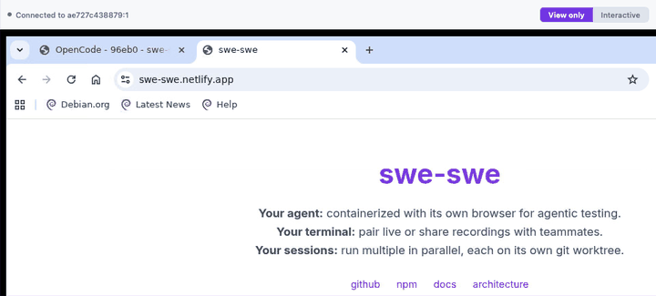

Agent View isn't available here
Agent View is a live browser your agent controls, so you can watch it test your app.

Why
- Your agent can't use a browser either, so it cannot open web pages to test your app.
How to get it
-
Install them here (Debian and Ubuntu), then restart swe-swe:
sudo apt-get install -y chromium xvfb x11vnc novnc websockify - Use another machine: the browser can run on a different machine. Open setup steps
- Leave it off: everything else keeps working (Agent Chat, Terminal, Preview and Files).